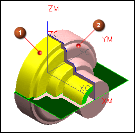

预计完成此练习需要：3–5 分钟
在这个练习中，您将使用处理中的工件。
在程序处理工件时，系统将计算处理中的工件，您可以图形化显示处理中的工件，不管是2D 还是3D。

部件
处理中的工件
处理中的工件由直到当前选定工序为止的所有工序按顺序所移除的材料总量来定义，由于工序顺序很重要，因此最好在工序导航器的程序顺序视图中选择工序。
开始 显示处理中的工件
要获取更多信息，参见：
使用命令查找器查找车削
帮助→CAM (加工)→铣加工→刀轨设置→切削参数→切削参数选项→空间范围选项卡→处理中的工件(IPW)